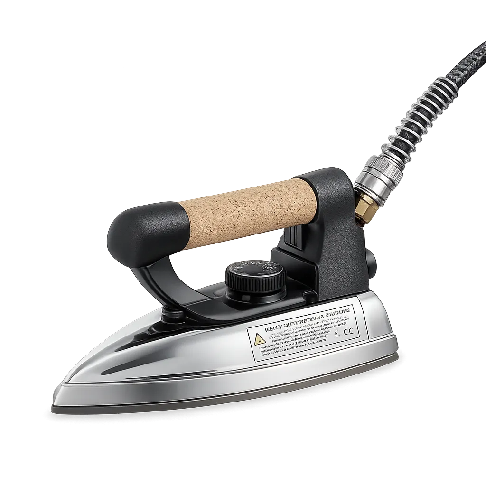
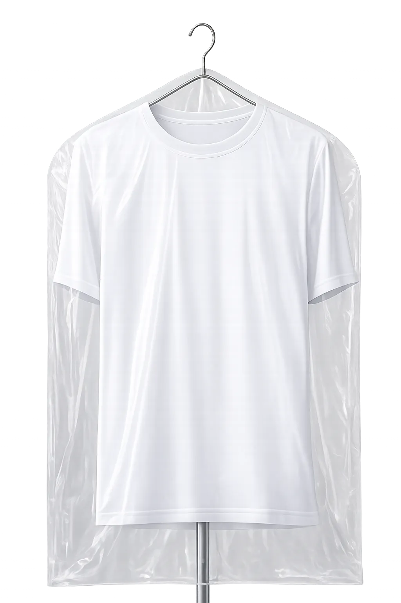

Dry Dutch Yükleniyor




Zamanınız size kalsın. Profesyonel kuru temizleme, ütüleme ve ayakkabı bakımı hizmetlerimizle kapınıza kadar geliyoruz.
Ümraniye kuru temizleme, profesyonel bakım, hijyenik temizlik ve kapıdan kapıya teslimat hizmeti.
Ümraniye kuru temizleme hizmeti, su kullanılmadan özel solventlerle yapılan profesyonel bir temizlik yöntemidir. Özellikle hassas kumaşlar, takım elbiseler, gelinlikler ve yünlü ürünler için idealdir.
🔹 Kumaşın formunu korur
🔹 Renk solmasını engeller
🔹 Derin leke çıkarma sağlar
🔹 Profesyonel bakım sunar
Günlük hayatın yoğun temposunda çamaşır yıkama, kurutma ve ütüleme büyük zaman kaybıdır. Ümraniye kuru temizleme hizmetimiz sayesinde tüm bu süreç profesyonel ekibimiz tarafından gerçekleştirilir.
✔️ Yıkama yok
✔️ Kurutma derdi yok
✔️ Ütü hazır teslim
✔️ Zamandan maksimum tasarruf
Ümraniye'de evinizden veya iş yerinizden kıyafetlerinizi alıyor, profesyonel olarak temizleyip ütüleyerek tekrar adresinize teslim ediyoruz.
📍 Ücretsiz teslim alma
📦 Hijyenik paketleme
🏠 Kapıya teslim
📲 WhatsApp ile kolay sipariş
Ümraniye kuru temizleme merkezimizde kullanılan solventler Avrupa standartlarına uygun, kontrollü ve profesyonel temizlik çözümleridir.
CFC içermeyen çözücüler
Hassas cilt dostu işlem
Koku bırakmayan temizlik
Hijyen sertifikalı süreç
Ümraniye kuru temizleme hizmetimiz kapsamında aşağıdaki ürünler profesyonel ekipmanlarla temizlenmektedir:
👕 Gömlek & Tişört
🧥 Mont & Kaban
👗 Elbise & Gelinlik
👖 Pantolon & Takım Elbise
🧣 Yünlü ve hassas kumaşlar